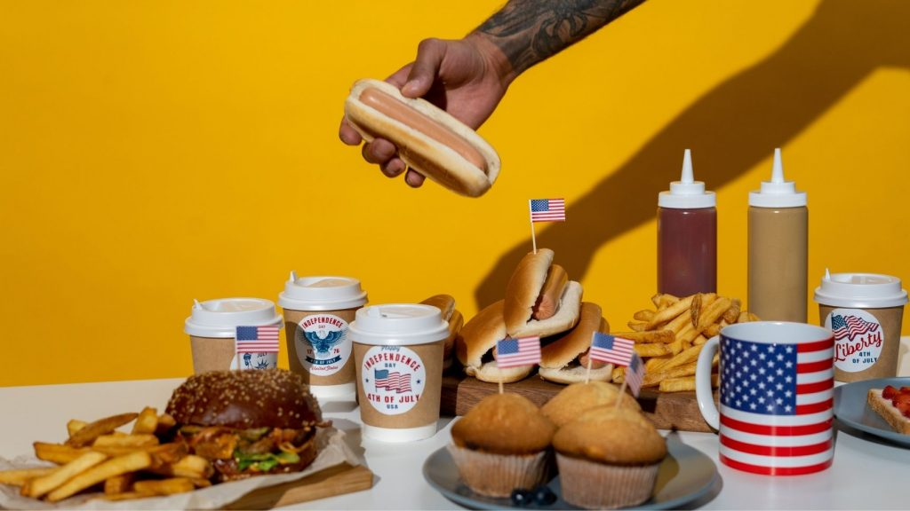

Entice your customers to purchase a new or old favorite product the weekend before this national holiday
 />Decorate your office or workspace in national colors and have employees come into work dressed up. Take some photos and write a little blurb about the 4th of July.
Each Monday of July, introduce a new staff member and have them answer some fun questions.
Create a blog that talks about all the major happenings in your industry that took place in July. Give your perspective about each topic.
Create or host a webinar and offer it to your readers at a discount in July.
Spread some adorableness on your blog by having your employees share photos of their cats when they were kittens on your blog. Ask your readers to post their kitten photos in the comments.
If there is a summer-related project that many people are doing this month in your industry, teach them how you would do it with a blog post.
This national day falls on the third Thursday of each quarter, which is usually in July. Post a blog asking your readers to introduce themselves in the comments, then engage with each of them on your blog.
Talk about products in your industry that were released this month that you love. Tell your readers why you think they would love them, too.